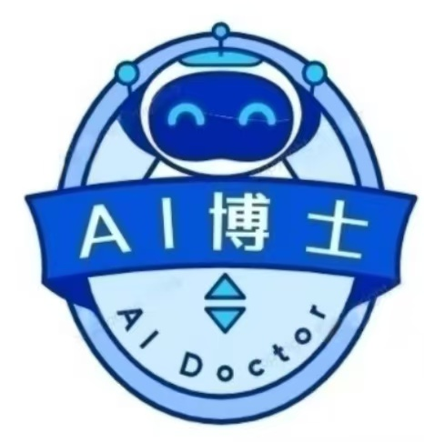

 华博育士(上海)
© 2023 华博育士(上海) 版权所有
CEO战略决策智能训练系统
专业版 - 提升高管团队战略思维与决策能力
🏢
商业模拟
🔍
智能诊断
📚
学习中心
✍️
能力测试
📊
能力档案
32%
市场份额
¥1.2B
季度营收
¥180M
季度利润
45
风险指数
📌
当前商业挑战
公司面临市场份额连续三个季度下滑，竞争对手推出了颠覆性产品，董事会要求立即采取行动扭转局面。作为CEO，你需要带领高管团队做出关键战略决策。
加大研发投入
¥15,000,000
并购竞争对手
¥30,000,000
优化现有产品线
¥5,000,000
开拓新兴市场
¥20,000,000
📝
决策日志
决策弱点诊断
⚠️
风险控制不足
过去5次决策中有3次风险指数超过60，显示风险偏好较高
⚠️
长期战略缺失
研发投入占比低于行业标杆企业15个百分点
⚠️
团队协同不足
跨部门决策执行效率评分仅为68/100
个性化学习推荐
书籍
《黑天鹅：如何应对不可预知的未来》- 纳西姆·尼古拉斯·塔勒布
方法论
情景规划训练：应对不确定性的战略工具
课程
"战略风险管理" - 华博育士高管课程
工具
风险-收益平衡决策矩阵模板
工具
战略风险分析工具包
改进计划
基于您的决策模式分析，建议采取以下改进措施：
完成《黑天鹅》阅读并提交读书笔记
参加情景规划工作坊（2天）
在下一轮模拟中控制风险指数在40-60区间
每月召开跨部门战略协调会
诊断进度
0%
推荐学习资源
📖
战略与宏观管理
📘
战略管理前沿
📘
国际关系与国际贸易
📘
战略思维与未来趋势
📘
国际视野与全球战略
📘
经济与管理实务
🔄
领导力与组织发展
📘
领导力与组织力
📘
领导力与团队建设
📘
核心管理基础
📘
高级管理技能
📘
项目管理与执行力
📘
组织数智化转型
📘
家风家训
📈
创新与运营实务
📘
技术创新与前沿趋势
📘
创新与创业基础
📘
技术与产品开发
📘
融资策略与财务管理
📘
财务知识与预算管理
📘
个人发展规划
📘
市场分析与营销战略
答题进度
0/15
战略决策能力测试
📩 提交试卷
战略能力评估
能力成长轨迹
战略视野
65
风险控制
45
执行效率
72
创新思维
58
团队协作
60
财务敏锐
68
能力证书
完成以下学习目标可申请华博育士认证证书：
所有核心能力达到60分以上
完成至少3门推荐课程
通过最终能力评估
申请能力认证
决策反馈
×
测试结果
×
正确率
0%
正确题数：
0
总题数：
0